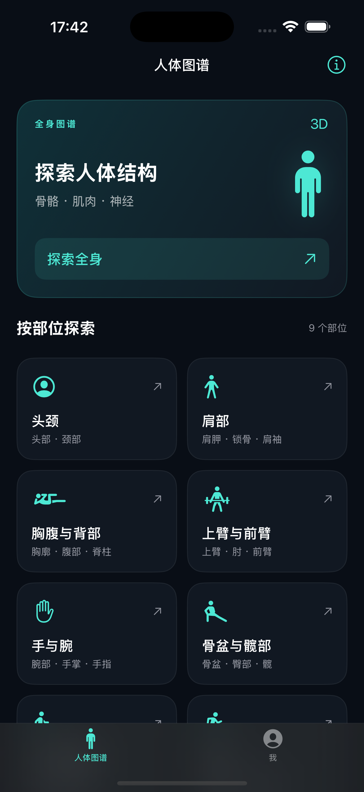

自由观察
旋转、缩放与平移。从不同角度观察全身，或进入单个部位查看细节。
全身与局部人体图谱 · 个人运动数据
转动视角，观察骨骼、肌肉与神经的关系。
从全身到局部，把名称与真实的位置联系起来。
iOS 应用 · 正在准备上架

01 / 人体图谱
按自己的节奏，逐层观察、逐个认识。
旋转、缩放与平移。从不同角度观察全身，或进入单个部位查看细节。
全身与局部切换骨骼、肌肉与神经图层，隐藏遮挡的结构，再随时恢复视图。
隐藏与恢复轻点模型识别名称，也可搜索结构，将肌肉、肌群与所在位置联系起来。
中文结构名称健康数据在本机处理，不上传至开发者服务器。
简单，也尊重你的选择
打开应用即可探索图谱。
图谱随应用提供，离线也能看。
健康数据的读取权限随时可管理。
查看常见问题，或通过邮箱联系开发者。